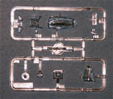

{kind=link}
{kind=link}
{kind=link}
{kind=link}
{kind=link}
{kind=link}


Eduard 1/48 Spitfire F 22/24
Kit #1121
MSRP $44.95
Images and text Copyright © 2006 by Matt Swan
Developmental Background
The story of the Supermarine Spitfire is well known world wide, how it was first developed as a racing plane in 1931 and later adopted by the RAF as it's front line defense fighter during the Second World War. Throughout its career the type has undergone several modifications creating a wide range of marks over many years. The Mk. 1 Spitfire entered service in 1938 and by the end of the war had gone through at least sixteen major modifications getting faster and carrying a larger load every time. When the war ended development of the Spitfire did not, production continued and various marks were sold as export aircraft to air forces around the world.
Most production Spitfires carried the Royce-Merlin V-12 liquid cooled engine that was also used in the North American Mustang but the final two Marks carried the massive Griffon engine producing over 2200 horse power and a top speed of 450 mph. The end of the Spitfire line is found in two very similar aircraft, the Mk.22 and the Mk.24. Differences between the two were minor at best but both featured a redesigned high loading wing first found on the Mk. 21 and had enlarged rudders and fins. The rear fuselage was cut down to improve visibility and some later Mk.22s had contra-rotating blades installed. Only 278 Mk.22s were manufactured before production changed over to the Mk.24. The Mk.24 had a slightly improved Griffon engine and a five blade propeller. 27 of the final Mk.22s were converted to Mk.24s and 54 new Mk.24 aircraft were produced. These last of the breed sported four Hispano Mk V 20mm cannons and zero-length under-wing rockets.
The Spitfire had come as far as it was going to by this time, technology was changing and the era of the propeller driven fighter was coming to an end. The Mk.24 served briefly with just a single squadron before being replaced in 1951 by the Hornet. Other Marks in history include the Mk.45, 46 and 47 which were the Navelized equivalents of the Mk.22 all with contra-rotating blades and folding wings (the Mk.45 had fixed wings). The Spitfire was finally retired as an aircraft design but not before seeing more than 22,800 examples of all marks being produced.
The Kit
The box may say Eduard but the plastic is Airfix. What we have here is one of the nicer Airfix models originally issued as a single media plastic kit now upgraded to a 'full meal deal' by Eduard. They have included with the original plastic an Eduard colored photo etched fret and a package of Aires resin pieces along with a new set of decals. The box is the same dimension as the original Airfix offering probably due to the size of the single injection molded sprue and features new artwork.
The plastic was good when it was Airfix and still is of that quality now. There is no evidence of flash, sink marks or heavy injection pins, the mold have definitely weathered the years well. The plastic is of good quality and light gray in appearance. All of the original plastic pieces are included. Surface detail is good with fine, crisp engraved panel lines, smooth surface texture and good parts fit. The base kit includes zero-length rockets but only the five bladed propeller is offered. Since this is billed as a Mk.22/24 kit it would have been nice to have a four blade propeller to model an early Mk.22 aircraft as well. The pilot is included and has separate arms allowing for some positioning done by the modeler. The canopy parts are nicely clear and fit well in the closed position however the open position fit is not that great. I might suggest the Squadron vac canopy as a fix for this issue. Overall we have eighty three light gray injection molded plastic pieces and ten clear pieces.
The Eduard photo etched fret is one of the newer colored frets with a layered instrument panel where the instrument detail is fashioned directly onto a metal piece rather than created with acetate sheets. Seat-belts, cockpit details, radiator screens and plenty of other fine items are included here totaling fifty one pieces. One of these pieces is actually a scribing template to correct an access door for the Mk.24 version. The resin package from Aires is mostly focused on the cockpit and looks great coming out of the bag. Well detailed sidewalls and cockpit floor pan are included along with internal framing and multi-part joy stick. Also here are replacement non-bulged wheels and exhaust shrouds. One piece shows a little warpage but nothing a little hot water won't fix. The resin bag of goodies contains twenty one detail pieces. What was once a good kit with ninety three plastic pieces is now an exceptionally well detailed kit of one hundred sixty five pieces. But wait, it's not done yet! There is one last item in the box worth talking about and that is a sheet of paint masks for the canopy and wheels. They are not full masks but require some liquid masking agent to use.

You may click on the small images above to view larger pictures.
Decals and Instructions
Eduard has overhauled the original Airfix instructions packaging it as a small booklet that opens with basic warnings on general model building followed by a complete parts map and paint code chart. Paint codes are provided for five different paint manufactures and by color name. There are no less than twenty six exploded view construction steps that include color call-outs and various Mark only steps. The last page of the booklet contains decal stencil placement instructions. In addition to the instruction booklet there is an A-3 size full color spread sheet for exterior painting and decal placement options for four different aircraft. On this sheet there are also some weathering suggestions, that's not something you commonly see in your instruction packet!
The kit includes two sheet of decals printed by Tally Ho; the first sheet contains a wide selection of stencils and warning markings and the second sheet contains the primary marking for the four aircraft featured in the instructions. The four featured are one operational RAF Mk.22, one RAF Mk.24, an RAF Mk.22 converted for the 1948 Cooper Trophy Air Race and one Syrian late model Mk.22. The decals display excellent print registry and color density. Colors are vibrant and demarcations are crisp. Previous experience with Tally Ho decals indicates they will react well with all common setting solutions.
Conclusions
Back in the day when this was an Airfix kit I would have given it a good recommendation and Eduard has just made it better. This is truly a 'full meal deal' kit, it has just about everything you could need to make an exceptionally detailed model. There are a few aftermarket items you might want to look at even though. First both Squadron and Falcon make a replacement canopy (Squadron's is marketed as the Mk.47 canopy but it's the same thing) for this kit which would be a good addition if you plan on modeling the aircraft with the cockpit open and with all that detail work inside this is a likely option. Eduard makes a set of landing flaps for this kit, why they did not include those with everything else is puzzling but you can pick them up separately.
When this was just Airfix I thought it was an exciting kit but now it's simply irresistible. With the recent demise of Airfix I suggest you get out and buy one (or maybe two) of these kits - you won't be sorry. And don't forget to grab its sister kit the Seafire Mk.46/47.